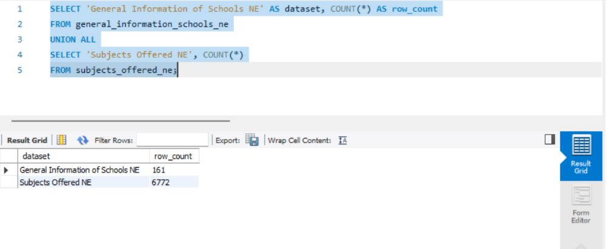
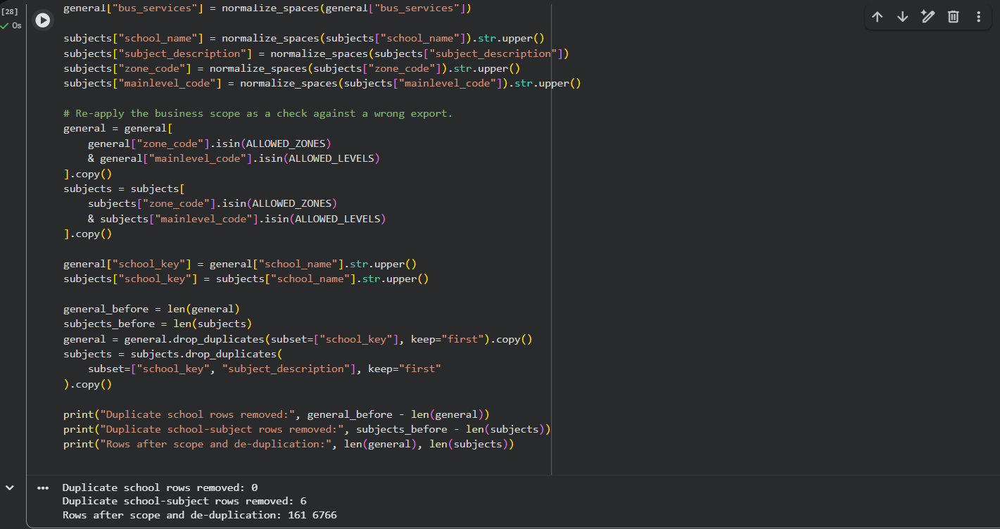
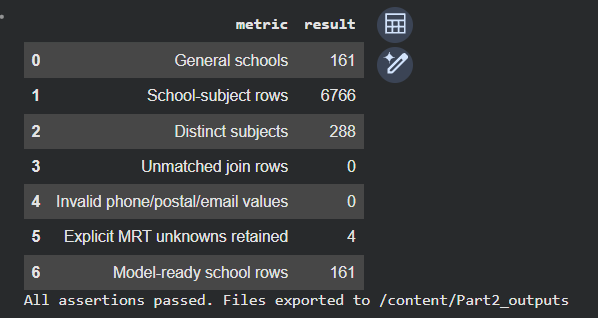
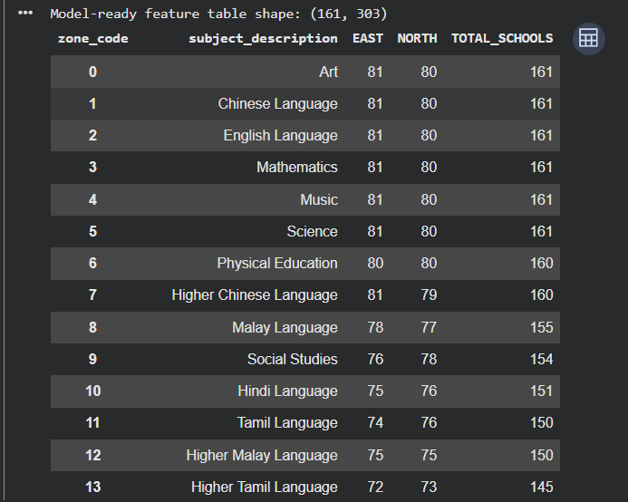

Prepare the tables
Created scoped school and subject tables. Used TRIM, standardised school-name matching and an INNER JOIN to connect related records.
School Data Cleaning & Analysis
I prepared school information and subject-offering data in MySQL Workbench, then used Python in Google Colab to clean, integrate and analyse the exported datasets.
Created scoped school and subject tables. Used TRIM, standardised school-name matching and an INNER JOIN to connect related records.
Created indexes for subject and zone/level queries. Verified 161 school rows and 6,772 subject rows before the Colab cleaning stage.
Normalised spaces, standardised telephone and MRT fields, retained explicit unknown values, and removed six school–subject duplicates after normalisation.
Validated many-to-one joins, compared subject coverage by zone and produced a school-level feature table for subsequent modelling.


All 6,766 cleaned subject records matched a school. The audit returned zero unmatched rows, zero zone disagreements and zero level disagreements.
Art, Chinese Language, English Language, Mathematics, Music and Science each appeared at all 161 schools in the scoped dataset: 81 in the East and 80 in the North.
Four MRT values remained explicitly unknown. Seven telephone formats were fixed, and the final phone, postal-code and email validation checks passed.
Produced a feature table with 161 rows and 303 columns. This was data preparation for modelling; no model accuracy or prediction result is claimed.


Counts describe this coursework dataset and its selected scope, not every school or subject in Singapore. Screenshots document the August 2026 work; the original notebook and datasets are not hosted here.
A separate retail practice lab uses fictional data and six reproducible SQLite queries. It is supplementary practice, separate from the MySQL school-data coursework above.
Open the SQL practice lab ↗